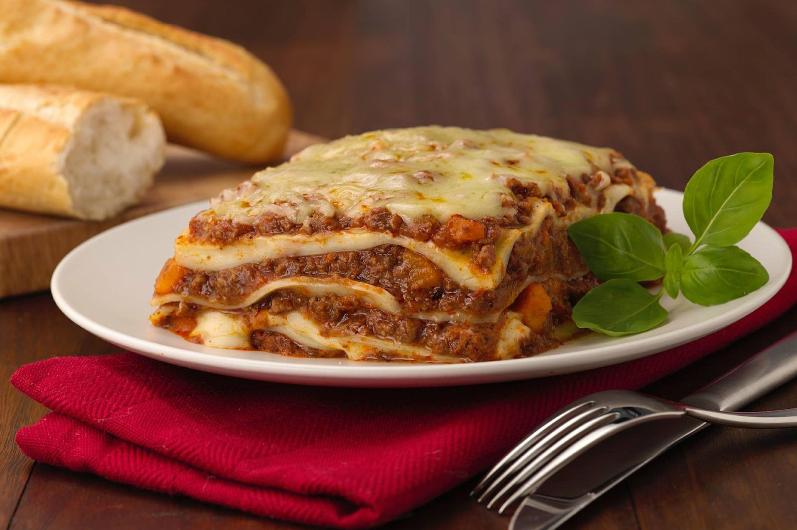

Home Made Lasagna Recipe
Homemade lasagna isn't as hard to make as it seems. Don't be intimidated by all the layers of delicious Italian flavor — try this homemade lasagna recipe today!
Ingredients
- Meat: This lasagna recipe starts with a pound of ground meat (½ pound ground pork, ½ pound lean ground beef).
- A diced onion is cooked until translucent with the ground meat.
- Canned tomatoes: You'll need a can of tomato sauce and a can of crushed tomatoes.
- · Fresh herbs: For fresh flavor, chop two tablespoons of parsley and crush one clove of garlic.
- Sugar: A dash of sugar balances out all of the acidity from the tomatoes.
- Spices and seasonings: This homemade lasagna is seasoned with dried basil, dried oregano, salt, and black pepper.
- Noodles: Of course, you'll need lasagna noodles! This recipe calls for uncooked noodles, but you can use the oven-ready variety to save time.
- Cheese: The cheese layer is made up of cottage cheese and Parmesan. You'll also need shredded mozzarella.
- Eggs: Eggs make the cheese layer extra creamy. Plus, they act as a binding agent (which means they hold the layer together).
- Preheat the oven to 375°F (190°C).
- In a large skillet, cook the ground meat and diced onion over medium heat until browned.
- Add the canned tomatoes, fresh herbs, sugar, and spices. Simmer for about 20 minutes.
- In a bowl, mix the cottage cheese, Parmesan cheese, eggs, and a pinch of salt.
- Spread a layer of meat sauce in a baking dish, followed by a layer of noodles, then a layer of the cheese mixture. Repeat the layers until all ingredients are used.
- Top with shredded mozzarella cheese.
- Bake in the preheated oven for 45 minutes or until the cheese is bubbly and golden brown.
- Let it cool for a few minutes before serving.
steps
ENJOY!😋